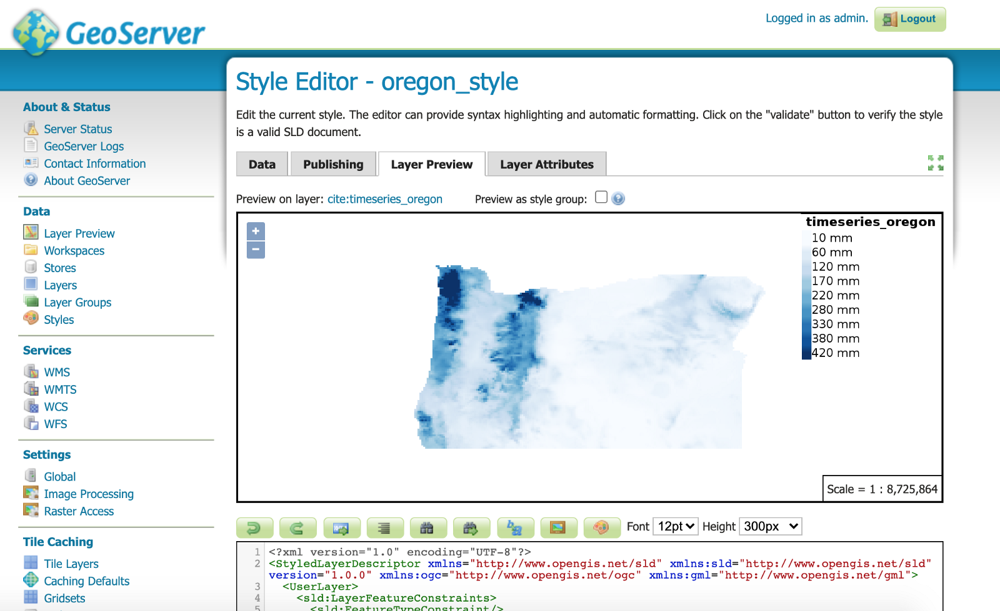
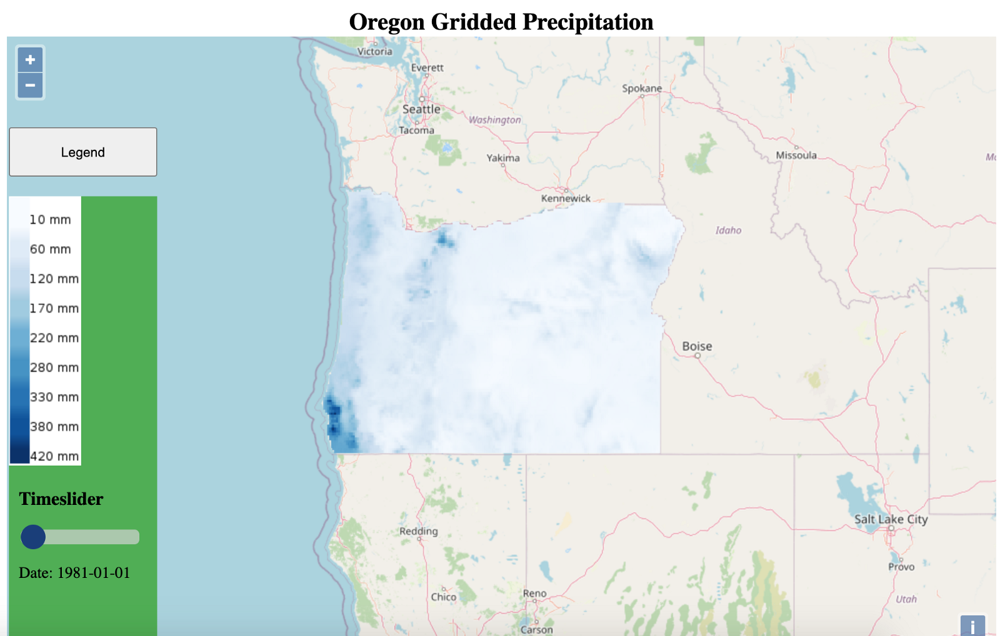

Part 1: https://www.davidjleifer.com/blogs/part1.html
Part 2: https://www.davidjleifer.com/blogs/part2.html
Part 4: https://www.davidjleifer.com/blogs/part4.html
Part 5: https://www.davidjleifer.com/blogs/part5.html
Part 6: https://www.davidjleifer.com/blogs/part6.html
Part 7: https://www.davidjleifer.com/blogs/part7.html
Part 8: https://www.davidjleifer.com/blogs/part8.html
Part 9: https://www.davidjleifer.com/blogs/part9.html
Part 10: https://www.davidjleifer.com/blogs/part10.html
Part 11: https://www.davidjleifer.com/blogs/part11.html
Part 12: https://www.davidjleifer.com/blogs/part12.html
Part 13: https://www.davidjleifer.com/blogs/part13.html
Today we will be adding a legend in Geoserver to our previously published Geoserver timeseries rasters using OpenLayers, which is an open source JavaScript (JS) library for web GIS. We will fiddle with some basic HTML, CSS and JS in order to get this to work properly and hopefully learn a thing or two about web GIS.
To begin, we will need to point our browser to our Geoserver homepage, with the X’s being replaced with your server’s external IP address:
http://XX.XXX.XXX.XXX:8080/geoserver/web/
On the right hand menu under Data click the “Styles” button. Next, click our previously created “oregon_style”. Copy and paste the following XML code into the editor:
<?xml version="1.0" encoding="UTF-8"?>
<StyledLayerDescriptor xmlns="http://www.opengis.net/sld" xmlns:sld="http://www.opengis.net/sld" version="1.0.0" xmlns:ogc="http://www.opengis.net/ogc" xmlns:gml="http://www.opengis.net/gml">
<UserLayer>
<sld:LayerFeatureConstraints>
<sld:FeatureTypeConstraint/>
</sld:LayerFeatureConstraints>
<sld:UserStyle>
<sld:Name>Oregon Precipitation</sld:Name>
<sld:FeatureTypeStyle>
<sld:Rule>
<sld:RasterSymbolizer>
<sld:ChannelSelection>
<sld:GrayChannel>
<sld:SourceChannelName>1</sld:SourceChannelName>
</sld:GrayChannel>
</sld:ChannelSelection>
<sld:ColorMap type="ramp">
<sld:ColorMapEntry color="#f7fbff" quantity="10.6999998092651" label="10 mm"/>
<sld:ColorMapEntry color="#deebf7" quantity="63.7959004688263" label="60 mm"/>
<sld:ColorMapEntry color="#c6dbef" quantity="116.891801128387" label="120 mm"/>
<sld:ColorMapEntry color="#9ecae1" quantity="169.987701787949" label="170 mm"/>
<sld:ColorMapEntry color="#6baed6" quantity="223.08360244751" label="220 mm"/>
<sld:ColorMapEntry color="#4292c6" quantity="276.179503107071" label="280 mm"/>
<sld:ColorMapEntry color="#2171b5" quantity="329.275403766632" label="330 mm"/>
<sld:ColorMapEntry color="#08519c" quantity="378.287004375458" label="380 mm"/>
<sld:ColorMapEntry color="#08306b" quantity="419.130004882813" label="420 mm"/>
</sld:ColorMap>
</sld:RasterSymbolizer>
</sld:Rule>
</sld:FeatureTypeStyle>
</sld:UserStyle>
</UserLayer>
</StyledLayerDescriptor>Under “Legend” in the upper right hand corner click the “Add Legend” button. We can click the “Preview” button to view the newly created legend. Now click “Validate” and “Apply” at the bottom of the screen. We have now reformatted the attributes to be consistent numbering, included a millimeter denotation, and also a legend for the style. We can also click on the “Layer Preview” button to see what our rasters and their legend will look like:

The legend image itself can be found at the following address, with your server’s external IP address included in place of the X’s:
http://xx.XXX.XXX.XXX:8080/geoserver/cite/wms?REQUEST=GetLegendGraphic&VERSION=1.0.0&FORMAT=image/png&WIDTH=20&HEIGHT=20&LAYER=cite:timeseries_oregon&STYLE=oregon_style
Now we will edit the HTML/CSS/JS file to contain our newly created legend image. If you are having trouble following along, the entire file will be included at the end of this article for easier copy/pasting. We will go block by block to explain which code does what.
Below the <style> section and inside the <body> of our HTML will go our “Title” div to explain what kind of data we are displaying:
<div id="title" class="title">
<h2>Oregon Gridded Precipitation</h2>
</div>Now scroll back up and in between the CSS <style> markers will go the div “title” style:
.title {
display: flex;
flex-direction: column;
justify-content: center;
text-align: center;
height:30px;
}Scroll back down to the <body> of the HTML section. View the “map” div that we created in the previous two parts. After the first ending > but before the div’s ending </div> we will create our legend toggle button:
<div id="button" class="button">
<button onclick="myFunction()" style="height:50px; width:150px">Legend</button>
</div>Scroll up to the CSS <style> again and include the button’s style:
#button {
position: absolute;
left:10px;
top:130px;
z-index:10000;
}In order to toggle our legend on and off, we need to include some JS, so scroll to the bottom of the document. In between the <script> tags but below the map and layers var, create a function to toggle the legend:
function myFunction() {
var x = document.getElementById("legend");
if (x.style.display === "none") {
x.style.display = "block";
} else {
x.style.display = "none";
}
}Scroll back up to the the HTML <body> and below the button <div> create the legend with our legend image from Geoserver. Again, make sure to replace the X’s with your server’s external IP address:
<div id="legend">
<img src="http://xx.XXX.XXX.XXX:8080/geoserver/cite/wms?REQUEST=GetLegendGraphic&VERSION=1.0.0&FORMAT=image/png&WIDTH=20&HEIGHT=20&LAYER=cite:timeseries_oregon&STYLE=oregon_style">Notice that we did NOT include a closing </div> for this code. This will be explained later. Now scroll back up to the CSS and include the following code in our <style> tags for our legend:
#legend {
background: #4CAF50;
position: absolute;
left:10px;
top:200px;
z-index:10000;
width:150px;
height:450px;
}Remember how something will be explained later? Now is that time. In the HTML <body>, move the slidecontainer and its code directly below the legend div. Now we will include the closing divs for the map, legend, and slidecontainer:
<div class="slidecontainer">
<h3>Timeslider</h3>
<input type="range" min="0" max="2" value="0" class="slider" id="myRange">
<p>Date: <span id="date_value"></span></p>
</div>
</div>
</div>Scroll up to the CSS <style> and include the following code to modify the slider container:
.slidecontainer {
width: 120px;
margin-bottom: -20px;
margin-left: 10px;
z-index: 100px;
position: relative;
}The entire code will look like this, with you replacing the X’s with your external IP address from your server:
<!DOCTYPE html>
<html>
<head>
<title>WMS Time</title>
<link rel="stylesheet" href="https://openlayers.org/en/v4.6.5/css/ol.css" type="text/css">
<script src="https://openlayers.org/en/v4.6.5/build/ol.js"></script>
<style>
/* Setting up the slider styling */
.slidecontainer {
width: 120px;
margin-bottom: -20px;
margin-left: 10px;
z-index: 100px;
position: relative;
}
.slider {
-webkit-appearance: none;
width: 100%;
height: 15px;
border-radius: 5px;
background: #d3d3d3;
outline: none;
opacity: 0.7;
-webkit-transition: .2s;
transition: opacity .2s;
}
.slider::-webkit-slider-thumb {
-webkit-appearance: none;
appearance: none;
width: 25px;
height: 25px;
border-radius: 50%;
background: #00008B;
cursor: pointer;
}
.slider::-moz-range-thumb {
width: 25px;
height: 25px;
border-radius: 50%;
background: #4CAF50;
cursor: pointer;
}
#legend {
background: #4CAF50;
position: absolute;
left:10px;
top:200px;
z-index:10000;
width:150px;
height:450px;
}
.map {
width: 100%;
height: 100%;
cursor: pointer;
}
body {
height: 98%;
}
html {
height: 98%;
}
.title {
display: flex;
flex-direction: column;
justify-content: center;
text-align: center;
height:30px;
}
#button {
position: absolute;
left:10px;
top:130px;
z-index:10000;
}
</style>
</head>
<body>
<div id="title" class="title">
<h2>Oregon Gridded Precipitation</h2>
</div>
<!-- Create map container -->
<div id="map" class="map">
<!-- Create Button -->
<div id="button" class="button">
<button onclick="myFunction()" style="height:50px; width:150px">Legend</button>
</div>
<!-- Create legend container inside map container-->
<div id="legend">
<img src="http://xx.XXX.XX.XXX:8080/geoserver/cite/wms?REQUEST=GetLegendGraphic&VERSION=1.0.0&FORMAT=image/png&WIDTH=20&HEIGHT=20&LAYER=cite:timeseries_oregon&STYLE=oregon_style">
<!-- Create slider container inside legend container-->
<div class="slidecontainer">
<h3>Timeslider</h3>
<input type="range" min="0" max="2" value="0" class="slider" id="myRange">
<p>Date: <span id="date_value"></span></p>
</div>
</div>
</div>
<div role="group" aria-label="Animation controls">
<script>
// Set up the layers
var layers = [
new ol.layer.Tile({
source: new ol.source.OSM()
}),
new ol.layer.Tile({
source: new ol.source.TileWMS({
url: 'http://xx.XXX.XXX.XXX:8080/geoserver/cite/wms',
params: {'LAYERS': 'cite:timeseries_oregon'}
})
})
];
var map = new ol.Map({
layers: layers,
target: 'map',
view: new ol.View({
// Defining the location in Lat Lon. In this case our image is from Brazil
center: ol.proj.transform([-120.5542,43.8041], 'EPSG:4326', 'EPSG:3857'),
zoom: 6
})
});
function myFunction() {
var x = document.getElementById("legend");
if (x.style.display === "none") {
x.style.display = "block";
} else {
x.style.display = "none";
}
}
// Define the available dates
var dates = ['1981-01-01T00:00:00.000Z', '1991-01-01T00:00:00.000Z', '2001-01-01T00:00:00.000Z', '2011-01-01T00:00:00.000Z']
var sliderRange = document.getElementById("myRange");
sliderRange.max = dates.length-1;
var dateValue = document.getElementById("date_value");
dateValue.innerHTML = dates[sliderRange.value].slice(0,10);
layers[1].getSource().updateParams({'TIME': dates[sliderRange.value]});
// Update the current slider value (each time you drag the slider handle)
sliderRange.oninput = function() {
dateValue.innerHTML = dates[this.value].slice(0,10);
layers[1].getSource().updateParams({'TIME': dates[this.value]});
}
</script>
</body>
</html>Replace your timeseries_oregon.html file in the www folder on your Geoserver on Google Cloud Platform with the above code and you will be set!
It will look like this:

Next post we will probably be changing the Timeslider to become larger so it is easier to slide on mobile devices. It would also be cool to include a layer toggle to toggle on and off the layers. Maybe we will also acquire some station data for these dates to include point data and include a popup-info-window for these points.
Remember it is #rasternotmonster.
Part 1: https://www.davidjleifer.com/blogs/part1.html
Part 2: https://www.davidjleifer.com/blogs/part2.html
Part 4: https://www.davidjleifer.com/blogs/part4.html
Part 5: https://www.davidjleifer.com/blogs/part5.html
Part 6: https://www.davidjleifer.com/blogs/part6.html
Part 7: https://www.davidjleifer.com/blogs/part7.html
Part 8: https://www.davidjleifer.com/blogs/part8.html
Part 9: https://www.davidjleifer.com/blogs/part9.html
Part 10: https://www.davidjleifer.com/blogs/part10.html
Part 11: https://www.davidjleifer.com/blogs/part11.html